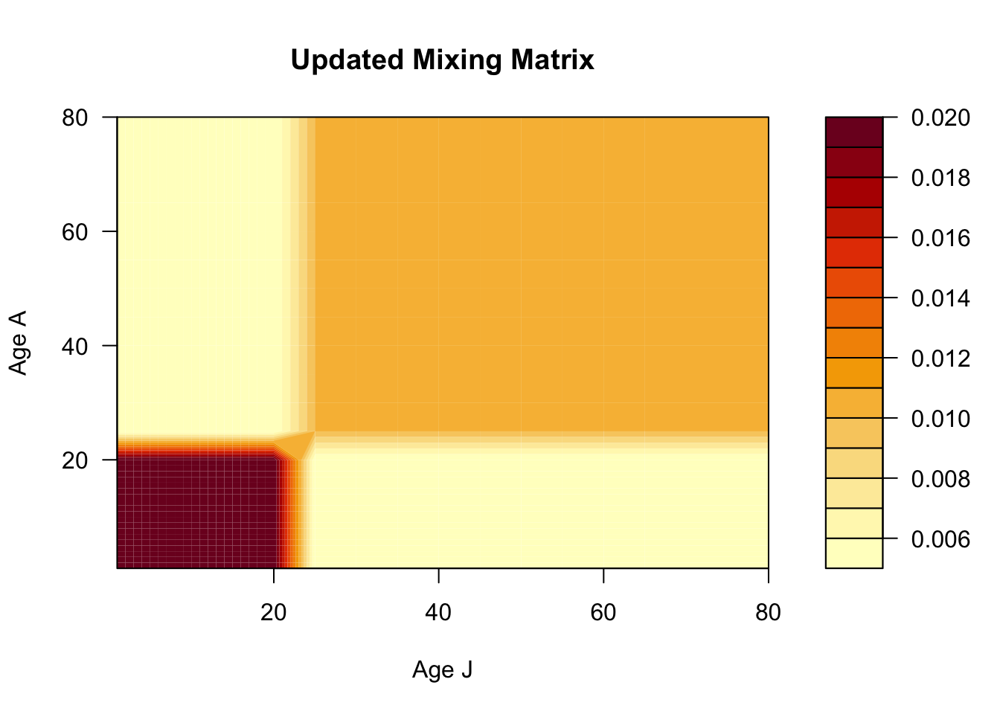
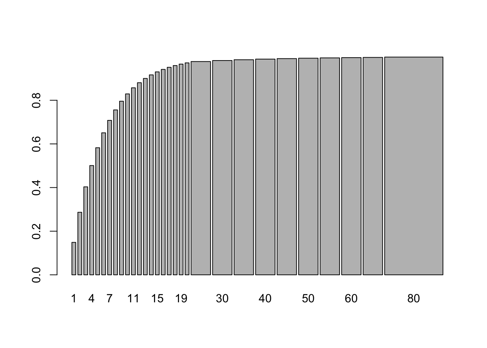

7 R Session 02
Heterogeneity and Age Structure in SIR Models
![]()
Materials adapted from Helen Wearing and Aaron King
7.1 Load Packages
Code
7.2 A Model With 2 Classes
We’ll start with the simplest mechanistic model of two classes we can think of, which has separate classes for two groups \(a\) and \(b\). These groups could represent different socioeconomic classes, for example.

Which can be written in equations as, \[ \begin{aligned} \frac{\dd{S_a}}{\dd{t}} &= -\lambda_a\,S_a \phantom{-\gamma\,I_b}\\ \frac{\dd{S_b}}{\dd{t}} &= -\lambda_b\,S_b \phantom{-\gamma\,I_b}\\ \frac{\dd{I_a}}{\dd{t}} &= \phantom{-}\lambda_a\,S_a -\gamma\,I_a\\ \frac{\dd{I_b}}{\dd{t}} &= \phantom{-}\lambda_b\,S_b-\gamma\,I_b\\ \frac{\dd{R_a}}{\dd{t}} &= \phantom{-\lambda_a\,S_b}+\gamma\,I_a\\ \frac{\dd{R_b}}{\dd{t}} &= \phantom{-\lambda_a\,S_b}+\gamma\,I_b\\ \end{aligned} \]
The \(\lambda\)s denote the group-specific force of infections:
\[ \begin{aligned} \lambda_a &= \beta_{aa}\,I_a+\beta_{ab}\,I_b\\ \lambda_b &= \beta_{ba}\,I_a+\beta_{bb}\,I_b \end{aligned} \]
In this model, each population can infect each other but the infection moves through the populations separately. Let’s simulate such a model. To make things concrete, we’ll assume that the transmission rates \(\beta\) are greater within groups than between them.
Code
# Create a named parameter vector that we can index by name in the model
ab_params <- c(
beta_within = 0.025,
beta_between = 0.005,
recovery = 10
)Code
# Here we set up the ODE model that matches the equations above
ab_model <- function (t, x, p, ...) {
# Unpack the state variables
Sa <- x["Sa"]
Sb <- x["Sb"]
Ia <- x["Ia"]
Ib <- x["Ib"]
# Unpack the parameters
beta_within <- p["beta_within"]
beta_between <- p["beta_between"]
recovery <- p["recovery"]
# group A force of infection
lambda_a <- beta_within * Ia + beta_between * Ib
# group B force of infection
lambda_b <- beta_within * Ib + beta_between * Ia
# The ODEs
dSadt <- - lambda_a * Sa
dSbdt <- - lambda_b * Sb
dIadt <- lambda_a * Sa - recovery * Ia
dIbdt <- lambda_b * Sb - recovery * Ib
dRadt <- recovery * Ia
dRbdt <- recovery * Ib
# Return the derivatives
list(c(
dSadt,
dSbdt,
dIadt,
dIbdt,
dRadt,
dRbdt
))
}Code
ab_df <- ab_sol %>%
# Convert the solution to a tibble for manipulation
as_tibble() %>%
# Create and modify columns
mutate(
# Convert all columns into type numeric
across(everything(), as.numeric),
# Create new columns to track pop sizes in each group
Na = Sa + Ia + Ra,
Nb = Sb + Ib + Rb
) %>%
# Go from a wide to long dataframe for ggplot
pivot_longer(
cols = -time,
names_to = c("state", "group"),
names_sep = 1,
values_to = "value"
) %>%
# Clean pivoted columns for ordered plots
mutate(
state = factor(state, levels = c("S", "I", "R", "N")),
group = paste("Group", str_to_upper(group))
)Code
# Create a vector of colors to be used throughout the ggplots
SIRcolors <- c("#1f77b4", "#ff7f0e", "#FF3851", "#591099")
ggplot(ab_df, aes(x = time, y = value, color = state)) +
geom_line(linewidth = 1.5) +
facet_wrap(~group, scales = "free_y") +
scale_color_manual(
values = SIRcolors,
labels = c("Susceptible", "Infected", "Recovered", "Total")
) +
labs(
x = "Time",
y = "Number of individuals",
color = "State"
) +
theme(legend.position = "bottom")
Despite using the same transmission rates, the epidemic in group B is much larger than in group A. Why do you think this is?
Now let’s plot the proportion of individuals in each state for the two groups.
Code
ab_df_props <- ab_df %>%
# Remove total pop count as we only want the group-specific values
filter(state != "N") %>%
mutate(
# Concatenate the state variable and the group letter for each row
state_group = paste0(state, str_extract_all(group, "[^Group ]")),
# Factor new variable for nicer plotting
state_group = factor(state_group, levels = c("RA", "RB", "IA", "IB", "SA", "SB"))
) %>%
# Group by time and state_group so we can calculate the relevant proportions over time
group_by(time, state_group) %>%
mutate(
prop = value / sum(ab_yinit)
) %>%
ungroup()Code
# Create new vectors of colors as using 6: one of each for A and J groups
Scolors <- RColorBrewer::brewer.pal(3, "Blues")[c(2, 3)]
Icolors <- RColorBrewer::brewer.pal(3, "Oranges")[c(2, 3)]
Rcolors <- RColorBrewer::brewer.pal(3, "Greens")[c(2, 3)]
ggplot(ab_df_props, aes(x = time, y = prop, fill = state_group)) +
geom_area() +
scale_fill_manual(
values = c(Scolors, Icolors, Rcolors),
limits = c("SA", "SB", "IA", "IB", "RA", "RB"),
) +
labs(
x = "Time",
y = "Proportion of individuals",
fill = "State"
) +
theme(legend.position = "bottom")
7.3 A Model With 2 Age Classes
Note that age is a special kind of heterogeneity in an epidemic model because individuals necessarily move from one class (younger) to another class (older) in a directional fashion that is independent of the infection and recovery process.
We’ll start by introducing age into the model above. So now \(a\) becomes juveniles and \(b\) becomes adults. And, independent of the disease process, juveniles (of any category) age into adults. Additionally, new juveniles are added through births (always first susceptible) and old individuals are lost to death.

We can do this very simply using the same ingredients that go into the basic SIR model. In that model, the waiting times in the S and I classes are exponential. Let’s assume the same thing about the aging process. We’ll also add in births into the juvenile susceptible class and deaths from the adult classes.
\[ \begin{aligned} \frac{\dd{S_J}}{\dd{t}} &= B -\lambda_J\,S_J \phantom{- \gamma\,I_A} -\alpha\,S_J \phantom{-\mu\,S_A}\\ \frac{\dd{S_A}}{\dd{t}} &= \phantom{B} - \lambda_A\,S_A \phantom{- \gamma\,I_A} +\alpha\,S_J -\mu\,S_A\\ \frac{\dd{I_J}}{\dd{t}} &= \phantom{B} +\lambda_J\,S_J - \gamma\,I_J -\alpha\,I_J \phantom{-\mu\,S_A}\\ \frac{\dd{I_A}}{\dd{t}} &= \phantom{B} +\lambda_A\,S_A - \gamma\,I_A + \alpha\,I_J - \mu\,I_A\\ \frac{\dd{R_J}}{\dd{t}} &= \phantom{B - \lambda_J\,S_A} + \gamma\,I_J - \alpha\,R_J \phantom{- \mu\,S_A}\\ \frac{\dd{R_A}}{\dd{t}} &= \phantom{B - \lambda_J\,S_A} + \gamma\,I_A + \alpha\,R_J -\mu\,R_A\\ \end{aligned} \]
Now, let’s simulate this model, under the same assumptions about transmission rates as above.
Code
# define the parameters for the demographic model
demog_params <- c(
beta_within = 0.004,
beta_between = 0.002,
recovery = 10,
births = 100,
# Width of age bands in years
age_band_j = 20,
age_band_a = 60
)Code
demog_model <- function (t, x, p, ...) {
# Unpack states
Sj <- x["Sj"]
Sa <- x["Sa"]
Ij <- x["Ij"]
Ia <- x["Ia"]
Rj <- x["Rj"]
Ra <- x["Ra"]
# Unpack parameters from vector
beta_within <- p["beta_within"]
beta_between <- p["beta_between"]
recovery <- p["recovery"]
births <- p["births"]
# Calculate rate of aging from each age group
aging_j <- 1 / p["age_band_j"]
aging_a <- 1 / p["age_band_a"]
# juv. force of infection
lambda_j <- beta_within * Ij + beta_between * Ia
# adult. force of infection
lambda_a <- beta_within * Ia + beta_between * Ij
# Calculate the ODEs
dSjdt <- births - (lambda_j * Sj) - (aging_j * Sj)
dSadt <- -(lambda_a * Sa) + (aging_j * Sj) - (aging_a * Sa)
dIjdt <- (lambda_j * Sj) - (recovery * Ij) - (aging_j * Ij)
dIadt <- (lambda_a * Sa) - (recovery * Ia) + (aging_j * Ij) - (aging_a * Ia)
dRjdt <- (recovery * Ij) - (aging_j * Rj)
dRadt <- (recovery * Ia) + (aging_j * Rj) - (aging_a * Ra)
# Return the ODEs
list(c(
dSjdt,
dSadt,
dIjdt,
dIadt,
dRjdt,
dRadt
))
}Note that in this function, \(\mu=\) aging_a \(=\) 1 / p["age_band_a"], i.e., death, is just like another age class.
Code
# initial conditions
demog_yinit <- c(Sj = 2000, Sa = 3000, Ij = 0, Ia = 1, Rj = 0, Ra = 1000)
# Solve the demographic model
demog_sol <- deSolve::ode(
y = demog_yinit,
times = seq(0, 200, by = 0.1),
func = demog_model,
parms = demog_params
)
demog_df <- demog_sol %>%
as_tibble() %>%
mutate(
across(everything(), as.numeric),
Nj = Sj + Ij + Rj,
Na = Sa + Ia + Ra,
# Calculate total population as need for proportional area plots
N = Nj + Na
) %>%
pivot_longer(
cols = -c(time, N),
names_to = c("state", "group"),
names_sep = 1,
values_to = "value"
) %>%
mutate(
state = factor(state, levels = c("S", "I", "R", "N")),
group = paste("Group", str_to_upper(group))
)7.3.1 Exercise 1: Use this code to plot the number of susceptible, infected, and recovered individuals over time.
Code
ggplot(demog_df, aes(x = time, y = value, color = state)) +
geom_line(linewidth = 1.5) +
facet_wrap(~group, nrow = 2, scales = "free_y") +
scale_color_manual(
values = SIRcolors,
labels = c("Susceptible", "Infected", "Recovered", "Total")
) +
labs(
x = "Time",
y = "Number of individuals",
color = "State"
) +
theme(legend.position = "bottom")
Note that now that births are replenishing susceptibles, infection persists. The results of the above are plotted here:
Now let’s plot the proportion of individuals in each state for the two groups.
Code
# Calculate the proportions in each state and group at each time point
demog_df_props <- demog_df %>%
filter(state != "N") %>%
mutate(
state_group = paste0(state, str_extract_all(group, "[^Group ]")),
state_group = factor(
state_group,
levels = c("RJ", "RA", "IJ", "IA", "SJ", "SA")
)
) %>%
group_by(time, state_group) %>%
mutate(
# Calculate the proportion of the total population, not the group pop
prop = value / N
) %>%
ungroup()Code

Now let’s plot the equilibrium seroprevalence for each age group.
Code
# Select the last row (time point) of the data frame
demog_equil_seroprev <- tail(demog_df) %>%
mutate(
# Calculate the proportion of individuals in each state and age group
prop = value / sum(value),
# Relabel groups for plots
group = case_when(group == "Group J" ~ "Juveniles", TRUE ~ "Adults"),
group = factor(group, levels = c("Juveniles", "Adults")),
.by = group
) %>%
filter(state == "R")Code
# Create vector of colors to distinguish between age groups
age_group_colors <- c("#2980B9", "#154360")
ggplot(demog_equil_seroprev, aes(x = group, y = prop, fill = group)) +
geom_col(position = "identity") +
scale_fill_manual(
values = age_group_colors
) +
labs(
x = "Age group",
y = "Equilibrium seroprevalence",
fill = "Age group"
) +
theme(legend.position = "none")
One thing we are often interested in is the \(R_0\) of a system. The details are beyond the scope of this workshop and are not required to complete the exercises in this worksheet, but we have outlined them in Section 7.7.1.1, particularly in Equation 7.2, at the end of this page.
In our system, \(R_0 =\) 2.66.
7.4 Getting more realistic: adding more age classes
In the models above, the aging process follows an exponential distribution, which means that whether an individual is 1~year old or 10 years old, the chance of them becoming an adult is the same! To improve on this, we can assume that the time a juvenile must wait before becoming an adult follows a gamma distribution. This is equivalent to saying that the waiting time is a sum of some number of exponential distributions. This suggests that we can achieve such a distribution by adding age classes to the model, so that becoming an adult means passing through some number of stages. We’ll use 30 age classes, and since they don’t have to be of equal duration, we’ll assume that they’re not. Specifically, we’ll have 20 1-yr age classes to take us up to adulthood and break adults into 10 age classes of 5~yr duration each. The last age class covers age 66-80.
Now, when we had just two age classes, we could write out each of the equations easily enough, but now that we’re going to have 30, we’ll need to be more systematic. In particular, we’ll need to think of \(\beta\) as a matrix of transmission rates. Let’s see how to define such a matrix in R. So that we don’t change too many things all at once, let’s keep the same contact structure as in the juvenile-adult model.
Code
# Set up the parameters for model that incorporates a more realistic age matrix
ages_params <- c(
beta_j = 0.02,
beta_a = 0.01,
beta_aj = 0.01 / 2,
recovery = 10,
births = 100
)
# Create a vector of ages
ages <- c(seq(1, 20, by = 1), seq(25, 65, by = 5), 80)
# Calculate the widths of the age bands
da_ages <- diff(c(0, ages)) # widths of age classes
# set up a matrix of contact rates between classes -- more contact within juveniles and adults than between
ages_beta_mat <- matrix(nrow = 30, ncol = 30)
# transmission rate for juveniles
ages_beta_mat[1:20, 1:20] <- ages_params["beta_j"]
# transmission rate for adults
ages_beta_mat[21:30, 21:30] <- ages_params["beta_a"]
# lower transmission rate between juveniles and adults
ages_beta_mat[1:20, 21:30] <- ages_params["beta_aj"]
# lower transmission rate between juveniles and adults
ages_beta_mat[21:30, 1:20] <- ages_params["beta_aj"]Code
ages_beta_mat %>%
# Turn into a data.frame so we can use ggplot()
as.data.frame.table() %>%
mutate(
Age_J = rep(ages, 30),
# Repeat each age in ages vector 30 times, and place in a list, then unlist
# to be stacked into a single dataframe column
Age_A = unlist(purrr::map(.x = ages, ~rep(.x, 30))),
) %>%
ggplot(aes(x = Age_J, y = Age_A, z = Freq)) +
geom_contour_filled(bins = 8) +
scale_fill_brewer(
palette = "Reds",
# Don't drop unused bins as useful for ensuring extremities properly binned
drop = FALSE
)
You could also use the filled.contour() base-R function to plot the beta matrix without needing to do any dataframe modifications, but it doesn’t look as nice …
Code
filled.contour(
ages, ages, ages_beta_mat,
plot.title = title(
main = "Updated Mixing Matrix",
xlab = "Age J",
ylab = "Age A"
)
)
We’ll assume that, at the time of introduction, all children are susceptible, as are adults over 45, but that individuals aged 20–45 have seen the pathogen before and are immune. The vector yinit expresses these initial conditions.
Note that we’re starting out with 1 infected individual in the 26th age class (age 50).
The codes that follow will be a bit easier to follow if we introduce some indexes that will allow us to pick out certain bits of the yinit vector.
Code
# Create vectors of indices relating to each state (ordered S1-80, I1-80, R1-80)
sindex <- 1:30
iindex <- 31:60
rindex <- 61:90
# Create vectors of indices relating to age group
juvies <- 1:20
adults <- 21:30Now, to capture the aging process, it’s convenient to define another matrix to hold the rates of movement between age classes.
Code
# Create a diagonal matrix that holds the rates of aging out of each age class
# The rows represent the age class you're in, the columns represent the age class
# you're moving to
aging_mat <- diag(-1 / da_ages)
# Fill in the rates of aging into each age class
aging_mat[row(aging_mat) - col(aging_mat) == 1] <- 1 / head(da_ages, -1)Have a look at the aging matrix, for example by doing:
Code
# move fast through the 1-year age classes - negatives are moves out, positives are moves in
aging_mat[1:5, 1:5] [,1] [,2] [,3] [,4] [,5]
[1,] -1 0 0 0 0
[2,] 1 -1 0 0 0
[3,] 0 1 -1 0 0
[4,] 0 0 1 -1 0
[5,] 0 0 0 1 -1Code
# don't age between these classes -- e.g. can't age from 1 to 6
aging_mat[1:10, 1:10] [,1] [,2] [,3] [,4] [,5] [,6] [,7] [,8] [,9] [,10]
[1,] -1 0 0 0 0 0 0 0 0 0
[2,] 1 -1 0 0 0 0 0 0 0 0
[3,] 0 1 -1 0 0 0 0 0 0 0
[4,] 0 0 1 -1 0 0 0 0 0 0
[5,] 0 0 0 1 -1 0 0 0 0 0
[6,] 0 0 0 0 1 -1 0 0 0 0
[7,] 0 0 0 0 0 1 -1 0 0 0
[8,] 0 0 0 0 0 0 1 -1 0 0
[9,] 0 0 0 0 0 0 0 1 -1 0
[10,] 0 0 0 0 0 0 0 0 1 -1Code
# move slowly between the wider age classes
aging_mat[25:30, 25:30] [,1] [,2] [,3] [,4] [,5] [,6]
[1,] -0.2 0.0 0.0 0.0 0.0 0.00000000
[2,] 0.2 -0.2 0.0 0.0 0.0 0.00000000
[3,] 0.0 0.2 -0.2 0.0 0.0 0.00000000
[4,] 0.0 0.0 0.2 -0.2 0.0 0.00000000
[5,] 0.0 0.0 0.0 0.2 -0.2 0.00000000
[6,] 0.0 0.0 0.0 0.0 0.2 -0.06666667Code
aging_mat %>%
as.data.frame.table() %>%
mutate(
Age_J = rep(ages, 30),
Age_A = unlist(purrr::map(.x = ages, ~rep(.x, 30)))
) %>%
ggplot(aes(x = Age_J, y = Age_A, z = Freq)) +
geom_contour_filled() +
scale_fill_brewer(
palette = "RdBu",
drop = FALSE
)
7.4.1 Exercise 2: What can you say about its structure? How are the different age groups in contact with each other?
Now we can put the pieces together to write a simulator for the age-structured SIR dynamics.
Code
# Using a list instead of a vector to hold the parameters, as ages_beta_mat and aging
# are both matrices, so we want to keep them as matrices, rather than flattening
multistage_params <- list(
beta_mat = ages_beta_mat,
recovery = ages_params["recovery"],
births = ages_params["births"],
aging_mat = aging_mat
)
multistage_model <- function (t, x, p, ...) {
# Unpack all states from the vector using the relevant indices
s <- x[sindex]
i <- x[iindex]
r <- x[rindex]
# Unpack parameters
beta_mat <- p[["beta_mat"]]
recovery <- p[["recovery"]]
births <- p[["births"]]
aging_mat <- p[["aging_mat"]]
# Calculate force of infection using matrix multiplication
lambda <- beta_mat %*% i
# Calculate the ODEs at every time step
# Note that R add element-wise for vectors i.e. lambda * s results
# in a vector length 30 (30 age groups), as does aging_mat %*% s,
# so v1[i] + v2[i] for i in 1:30
dsdt <- -lambda * s + aging_mat %*% s
didt <- lambda * s + aging_mat %*% i - recovery * i
drdt <- aging_mat %*% r + recovery * i
# Add the birth rate to the first age group
dsdt[1] <- dsdt[1] + births
# Return the ODEs in a list
list(c(dsdt, didt, drdt))
}We can plug this into ode just as we did the simpler models to simulate an epidemic. We’ll then plot the epidemic curve.
Code
# Solve the model with a realistic age matrix
multistage_sol <- deSolve::ode(
y = demog_yinit_ages,
times = seq(0, 100, by = 0.1),
func = multistage_model,
parms = multistage_params
)
# Extract all infected age groups at all time points into a new vector
multistage_infecteds <- multistage_sol[, 1 + iindex]Code
# Create a dataframe of the sum of infectious individuals in Juv/Adult age groups
# at each time point
multistage_df <- tibble(
# Get all times from model run
time = multistage_sol[, 1],
# At each timepoint, apply the sum function to all juvenile infected individuals
Juveniles = apply(multistage_infecteds[, juvies], 1, sum),
# At each timepoint, apply the sum function to all adult infected individuals
Adults = apply(multistage_infecteds[, adults], 1, sum)
) %>%
# Pivot to create a long dataframe that works with ggplot
pivot_longer(
cols = c(Juveniles, Adults),
names_to = "age_group",
values_to = "infections"
) %>%
# Turn new pivoted variable into a factor to plot nicely
mutate(
age_group = factor(age_group, levels = c("Juveniles", "Adults"))
)Code
ggplot(multistage_df, aes(x = time, y = infections, color = age_group)) +
geom_line(linewidth = 1.5) +
scale_color_manual(
values = age_group_colors
) +
labs(
x = "Time",
y = "Number of infections",
color = "Age group"
)
Let’s mimic a situation where we have cross-sectional seroprevalence data (e.g. measures of antibodies that tell you someone is in the R class). In using such data, we’d typically assume that the system was at equilibrium.
7.4.2 Exercise 3: What does the equilibrium age-specific seroprevalence look like in this example?
Use the code below to display the age-specific seroprevalence (i.e., the seroprevalence for each age group at equilibrium)
Code
# Get the last values for all individuals. drop() removes the column name, [-1] removes the time value
multistage_equil <- drop(tail(multistage_sol, 1))[-1]
# Calculate the equilibrium pop sizes of each age group
multistage_equil_n <- multistage_equil[sindex] +
multistage_equil[iindex] +
multistage_equil[rindex]
# Calculate equilibrium seroprevalence for each age group
multistage_equil_seroprev <- multistage_equil[rindex] / multistage_equil_n
# Create a dataframe to store equilibrium seroprev for plotting
multistage_equil_seroprev_df <- tibble(
age = ages,
seroprev = multistage_equil_seroprev,
width = da_ages
)Code
ggplot(multistage_equil_seroprev_df, aes(x = age, y = seroprev, fill = age)) +
# Set column width to width of age bands, and justify to start at lower bound
geom_col(width = multistage_equil_seroprev_df$width, just = 1.0, color = "black") +
labs(
x = "Age",
y = "Seroprevalence"
) +
scale_x_continuous(breaks = seq(0, 80, 10)) +
scale_fill_continuous(low = age_group_colors[1], high = age_group_colors[2])
At what age does the seroprevalence reach 75%?
Let’s also compute \(R_0\). And because we’ve added a lot of age structure, with transitions between the age groups, we can’t just copy and paste the previous Next Generation Matrix code (from Section 7.7.1.1). As before, the details of this computation are out of the workshop’s scope, but they are outlined in Section 7.7.1.2. We have created a function to calculate R0 for an age-structured SIR and have added some comments, but read Section 7.7.1.2 for the full details and reasoning.
Code
#' Calculate R0
#'
#' Calculate the R0 of an SIR model using the next generation matrix approach described in @heffernanPerspectivesBasicReproductive2005
#'
#' @param beta_mat A matrix of beta parameter values
#' @param stable_n_mat A matrix of the stable age distributions
#' @param aging_mat A matrix of the aging rates between age compartments
#' @param recovery_rate The recover rate parameter value (of type double)
#'
#' @return The R0 value as type double
#' @examples
#' calculate_R0(
#' beta_mat = multistage_params[["beta_mat"]],
#' stable_n_mat = multistage_stable_n,
#' aging_mat = multistage_params[["aging_mat"]],
#' recovery_rate = multistage_params[["recovery"]]
#')
calculate_R0 <- function(beta_mat, stable_n_mat, aging_mat, recovery_rate) {
# evaluate new inf jac pde at dfe
f_mat <- beta_mat * stable_n_mat
# set off-diag of non-inf transition jac pde to neg aging of prev age group
# (use aging matrix as already calculated in correct places)
v_mat <- -aging_mat
# Update the diagonal of non-inf transition jac to add recovery rate
diag(v_mat) <- diag(v_mat) + recovery_rate
## Alternative method of calculating using age bands directly
# v_mat <- diag(recovery_rate + 1 / da_ages)
# v_mat[row(v_mat) - col(v_mat) == 1] <- - 1 / head(da_ages, -1)
# spectral trace
R0 <- max(Re(eigen(solve(v_mat, f_mat), only.values = TRUE)$values))
return(R0)
}Code
calculate_R0(
beta_mat = multistage_params[["beta_mat"]],
stable_n_mat = multistage_stable_n,
aging_mat = multistage_params[["aging_mat"]],
recovery_rate = multistage_params[["recovery"]]
)[1] 6.9912427.4.3 Exercise 4: Updating the contact matrix
You will need to read and edit the following code carefully so that it runs with your updated parameters. We have highlighted the relevant lines in the code chunks, so hopefully you won’t miss them, though make sure you do copy all the code!
7.4.3.1 Change the juvenile-juvenile contact rate to be 0.025.
Code
update_age_beta_mat <- ages_beta_mat
update_age_beta_mat[1:20, 1:20] <- ?
update_age_params <- multistage_params
update_age_params[["beta_mat"]] <- update_age_beta_mat7.4.3.2 Simulate and plot the age-structured SIR dynamics under your assumptions and record how the age-specific seroprevalence has changed.
Code
update_age_sol <- deSolve::ode(
y = demog_yinit_ages,
times = seq(0, 400, by = 0.1),
func = multistage_model,
parms = ?
)
# Get the time series for each infectious age group
update_age_infecteds <- update_age_sol[, 1 + iindex]
# Get the last values in the time series
update_age_equil <- drop(tail(update_age_sol, 1))[-1]
# Calculate the number of individuals in each age group at the final timepoint
update_age_equil_n <- update_age_equil[ ? ] +
update_age_equil[ ? ] +
update_age_equil[ ? ]
# Calculate final seroprevalence
# Hint: You need PREVIOUSLY infected individuals
update_age_equil_seroprev <- update_age_equil[ ? ] / update_age_equil_n
update_age_equil_seroprev_df <- tibble(
age = ages,
seroprev = update_age_equil_seroprev,
width = da_ages
)
ggplot(update_age_equil_seroprev_df, aes(x = age, y = seroprev, fill = age)) +
# Set column width to width of age bands, and justify to start at lower bound
geom_col(width = update_age_equil_seroprev_df$width, just = 1.0, color = "black") +
labs(
x = "Age",
y = "Seroprevalence"
) +
scale_x_continuous(breaks = seq(0, 80, 10)) +
scale_fill_continuous(low = age_group_colors[1], high = age_group_colors[2])At what age does the seroprevalence reach 75%? How does this compare to the answer in Section 7.4.2?
7.4.3.3 Compute \(R_0\) for your assumptions.
As described previously, the calculation for \(R_0\) is difficult due to all the age categories and transitions. Use the calculate_R0() function we defined earlier to calculate \(R_0\) for our updated system.
Code
calculate_R0(
beta_mat = ?,
stable_n_mat = ?,
aging_mat = ?,
recovery_rate = ?
)If you’ve done everything correctly, you should get \(R_0 =\) 7.29. This is higher than previously. Does this match your intuition, given our changes to the beta matrix?
The following is Aaron’s original code which provides slightly different results.
Code
F_mat <- diag(update_age_equil_n) %*% update_age_beta_mat +
update_age_params[["aging_mat"]] -
diag(diag(update_age_params[["aging_mat"]]))
V_mat <- diag(update_age_params[["recovery"]] - diag(update_age_params[["aging_mat"]]))
# R0 approximately 6.53
max(Re(eigen(solve(V_mat, F_mat), only.values = TRUE)$values))[1] 7.0347697.5 R0 and the mean age of infection
To develop some intuition about the relationship between \(R_0\) and the mean age of infection, let’s play with an interactive plot. We will assume that the population is completely susceptible and that the force of infection is constant. We’ll also assume that there is heterogenous mixing i.e. no age structure.
As we’ve seen in Matt’s lecture on age structure, we can calculate the mean age of infection using the equation below:
\[ A \approx \frac{L}{R_E - 1} \tag{7.1}\]
where \(L\) is the life expectancy \(\left(L = \frac{1}{\mu}\right)\) and \(R_E\) is the effective reproductive number (\(R_E = R_0 * (1 - p)\) where \(p\) is the fraction of individuals vaccinated).
See Section 7.7.2 for code you can run in R to investigate the relationship between \(R_0\), vaccination coverage, life expectancy, and the mean age of infection.
7.5.1 Interactive Plot
Code
init_R0 = 2.0
init_vacc = 0.0
init_lifeexp = 75Code
function set(input, value) {
input.value = value;
input.dispatchEvent(new Event("input", {bubbles: true}));
}7.5.2 Interactive Plot Exercises
7.5.2.1 When you increase \(R_0\) from 2.0 to 4.0, what happens to the mean age of infection?
7.5.2.1.1 Is there a linear change? If not, why not?
7.5.2.2 With \(R_0\) to 4.0, approximately what level of vaccination coverage is required for a mean age of infection of 40 years?
7.5.2.3 Leaving \(R_0\) and vaccination coverage the same, decrease the life expectancy to 50 years. What happens to the mean age of infection?
7.5.2.3.1 If it changed, why do you think it did?
Think about the definitions of \(R_E\) and life expectancy in Equation 7.1
7.6 What do real contact networks look like?
The POLYMOD study Mossong, 2008 was a journal-based look into the contact network in contemporary European society. Let’s have a look what these data tell us about the contact structure.
Code
mossong_cont_net <- read.csv(
url("http://www.math.mcmaster.ca/~bolker/eeid/data/mossong.csv"),
as.is = TRUE
)
mossong_ages <- unique(mossong_cont_net$contactor)
mossong_cont_net$contactor <- ordered(mossong_cont_net$contactor, levels = mossong_ages)
mossong_cont_net$contactee <- ordered(mossong_cont_net$contactee, levels = mossong_ages)Since contacts are symmetric, we’ll need to estimate the symmetric contact matrix.
Here we’ll use the filled.contour function to visualize the contact matrix, to show you an alternative way of visualizing contact matrices. Notices that we are using the raw matrix object, not a long dataframe, as previously.
Code
filled.contour(
ages, ages, log10(mossong_mat),
plot.title = title(
main = "Log10 of raw contact rate",
xlab = "Age of contactor",
ylab = "Age of contactee"
)
)
Code
filled.contour(
ages, ages, log10(mossong_mat_sym),
plot.title = title(
main = "Log10 of symmetrical contact rate",
xlab = "Age of contactor",
ylab = "Age of contactee"
)
)
Code
ggplot(
mossong_cont_sums,
aes(x = age, y = total_contacts, color = type, fill = type, group = type)
) +
geom_path(linewidth = 1) +
geom_point(
position = "identity",
alpha = 0.8,
shape = 21,
size = 4
) +
scale_color_manual(
values = c("slategray4", "navy"),
labels = c("Contactees", "Contactors"),
aesthetics = c("color", "fill")
) +
guides(color = "none") +
labs(
x = "Age",
y = "Total contacts",
fill = "Type of contact"
) +
theme(legend.position = "bottom")
While this matrix tells us how many contacts are made per year by an individual of each age, it doesn’t tell us anything about the probability that a contact results in communication of infection. Let’s assume that each contact has a constant probability \(q\) of resulting in a transmission event.
Code
q <- 3e-5
mossong_beta_mat <- q * mossong_mat_symCode
filled.contour(
ages, ages, log10(mossong_beta_mat),
plot.title = title(
main = "WAIFW matrix based on POLYMOD data",
xlab = "Age",
ylab = "Age"
)
)
Now let’s simulate the introduction of such a pathogen into a population characterized by this contact structure.
Code
mossong_sol <- deSolve::ode(
y = demog_yinit_ages,
times = seq(0, 200, by = 0.5),
func = multistage_model,
parms = multistage_params
)
mossong_infecteds <- mossong_sol[, 1 + iindex]
mossong_infecteds_df <- tibble(
time = mossong_sol[, 1],
Juveniles = apply(mossong_infecteds[, juvies], 1, sum),
Adults = apply(mossong_infecteds[, adults], 1, sum)
) %>%
pivot_longer(
cols = c(Juveniles, Adults),
names_to = "age_group",
values_to = "infections"
) %>%
mutate(
age_group = factor(age_group, levels = c("Juveniles", "Adults"))
)Code
ggplot(mossong_infecteds_df, aes(x = time, y = infections, color = age_group)) +
geom_line(linewidth = 1.5) +
scale_color_manual(
values = age_group_colors
) +
labs(
x = "Time",
y = "Number of infections",
color = "Age group"
)
As before, we can also look at the equilibrium seroprevalence
Code
mossong_equil <- drop(tail(mossong_sol, 1))[-1]
mossong_equil_n <- mossong_equil[sindex] +
mossong_equil[iindex] +
mossong_equil[rindex]
mossong_equil_seroprev <- mossong_equil[rindex] / mossong_equil_n
mossong_equil_seroprev_df <- tibble(
# We can reuse the ages vectors from before as they are the same
# as the POLYMOD data
age = ages,
seroprev = mossong_equil_seroprev,
width = da_ages
)Code
ggplot(mossong_equil_seroprev_df, aes(x = age, y = seroprev, fill = age)) +
geom_col(width = mossong_equil_seroprev_df$width, just = 1.0, color = "black") +
labs(
x = "Age",
y = "Seroprevalence"
) +
scale_x_continuous(breaks = seq(0, 80, 10)) +
scale_fill_continuous(low = age_group_colors[1], high = age_group_colors[2])
and compute the \(R_0\) for this infection.
Code
n_p <- solve(
multistage_params[["aging_mat"]],
-c(multistage_params[["births"]], rep(0, 29))
)
F_p <- diag(n_p) %*% multistage_params[["beta_mat"]] +
multistage_params[["aging_mat"]] -
diag(diag(multistage_params[["aging_mat"]]))
V_p <- diag(
multistage_params[["recovery"]] -
diag(multistage_params[["aging_mat"]])
)
max(
Re(
eigen(solve(V_p, F_p),only.values=T)$values
)
)[1] 6.792003Need to check what’s going on here as just recycling previous code and doesn’t depend on Mossong Matrix.
How does this R0 value compare to the R0 value obtained from Exercise 4?
7.7 Bonus Materials
7.7.1 Calculating \(R_0\) with the Next Generation Matrix
7.7.1.1 Simple model structure
To compute \(R_0\), we need to know the stable age distribution (the relative proportion in the juvenile and adult age classes) of the population, which we can find by solving for the disease-free equilibrium: \(S_J^*=B/\alpha\) and \(S_A^*=B/\mu\). With the stable age distribution, we can calculate \(R_0\) by constructing the next generation matrix. The code below outlines how the next generation matrix is constructed using the \(\alpha\) (aging from juvenile to adult), \(\mu\) (death), \(n\) (total births), \(\gamma\) (recovery), \(da\) (width of age groups in years), and \(\beta\) (transmission) parameters.
The next generation matrix is a matrix that specifies how many new age-specific infections are generated by a typical infected individual of each age class (in a fully susceptible population). For example, let’s consider an infected adult and ask how many new juvenile infections it generates: this is the product of the number of susceptible juveniles (from the stable age distribution), the per capita transmission rate from adults to juveniles and the average duration of infection, i.e. \(S_J^* \times \beta_{JA} \times 1/ (\gamma+\mu)\). This forms one element of our next generation matrix. The other elements look very similar, except there are extra terms when we consider an infected juvenile because there is a (very small) chance they may age during the infectious period and therefore cause new infections as an adult:
\[ \mathrm{NGM} = \begin{pmatrix} \frac{S_J^* \beta_{JJ}}{(\gamma + \alpha)} + \frac{\alpha}{(\gamma+\mu)} \frac{S_J^* \beta_{JA}}{(\gamma + \mu)} & \frac{S_J^* \beta_{JA}}{(\gamma + \mu)} \\ \frac{S_A^* \beta_{AJ}}{(\gamma + \alpha)} + \frac{\alpha}{(\gamma + \mu)} \frac{S_A^*\beta_{AA}}{(\gamma+\mu)} & \frac{S_A^* \beta_{AA}}{(\gamma + \mu)} \end{pmatrix} \tag{7.2}\]
\(R_0\) can then be computed as the dominant eigenvalue (i.e., the one with the largest real part) of this matrix. Let’s take an example from a model with 2 age classes, from above. First, let’s define the components of the next generation matrix:
Code
ngm_params <- c(
beta_within = 0.011,
beta_between = 0.005,
age_band_j = 20,
age_band_a = 60,
recovery = 10
)
alpha_ngm <- 1 / ngm_params["age_band_j"]
mu_ngm <- 1 / ngm_params["age_band_a"]
n_ngm <- demog_params["births"] / c(alpha_ngm, mu_ngm)
beta_ngm <- matrix(c(
ngm_params["beta_within"],
ngm_params["beta_between"],
ngm_params["beta_between"],
ngm_params["beta_within"]
),
nrow = 2,
ncol = 2
)The Next Generation Matrix can be calculated in R as:
Code
ngm <- matrix(
c(
n_ngm[1] * (beta_ngm[1, 1] / (ngm_params["recovery"] + alpha_ngm)) +
alpha_ngm / (ngm_params["recovery"] + mu_ngm) *
n_ngm[1] * beta_ngm[1, 2] / (ngm_params["recovery"] + mu_ngm),
n_ngm[2] * beta_ngm[2, 1] / (ngm_params["recovery"] + alpha_ngm) +
alpha_ngm / (ngm_params["recovery"] + mu_ngm) *
n_ngm[2] * (beta_ngm[2, 2] / (ngm_params["recovery"] + mu_ngm)),
n_ngm[1] * beta_ngm[1, 2] / (ngm_params["recovery"] + mu_ngm),
n_ngm[2] * beta_ngm[2, 2] / (ngm_params["recovery"] + mu_ngm)
),
nrow = 2,
ncol = 2
)We can then calculate the eigenvalues and eigenvectors of this matrix:
Code
eigen(ngm)eigen() decomposition
$values
[1] 7.191869 1.591188
$vectors
[,1] [,2]
[1,] -0.1958841 -0.8560336
[2,] -0.9806271 0.5169202We can also choose to just output the eigenvalues:
Code
eigen(ngm, only.values = TRUE)$values
[1] 7.191869 1.591188
$vectors
NULLFinally, let’s print \(R_0\):
7.7.1.2 Age-structured NGM
Many times it would be impractical to write out the NGM: there are often too many compartments in an age-structured model. In this instance, we want to use a slightly different approach, but the underlying principles are the same: each element of the NGM balances the number of new infections expected to be produced with the rates of individuals coming in and out of that compartment.
7.7.1.2.1 Stable Age Distribution
The first thing we need, as before, is the stable age distribution i.e., the disease-free equilibrium. There are two ways we can do this:
- Simulate the model without any infections for a sufficiently long time (simple, but less accurate)
- Do the math.
7.7.1.2.1.1 Disease-Free Simulation
Code
# Set up initial conditions without any infections
multistage_sonly_yinit <- c(
S = c(rep(250, 30)),
I = c(rep(0, 30)),
R = c(rep(0, 30))
)
# Solve disease free sim to get dfe
multistage_sonly_sol <- deSolve::ode(
y = multistage_sonly_yinit,
times = seq(0, 300, by = 1),
func = multistage_model,
parms = multistage_params
)
# Calculate population size at each time point and save to dataframe
multistage_sonly_pop <- tibble(
time = multistage_sonly_sol[, 1],
pop = apply(multistage_sonly_sol[, -1], 1 , sum)
)
7.7.1.2.1.2 Doing the Math
Alternatively, we can get the stable age distribution by finding the population structure that balances the birth, aging, and death processes. At equilibrium, we have the matrix equation
\[ \begin{pmatrix} -\alpha_1 & 0 & 0 & \cdots & 0\\ \alpha_1 & -\alpha_2 & 0 & \cdots & 0\\ 0 & \alpha_2 & -\alpha_3 & \cdots & 0\\ \vdots & & \ddots & \ddots & \vdots \\ 0 & \cdots & & \alpha_{29} & -\alpha_{30}\\ \end{pmatrix} . \begin{pmatrix} n_1 \\ n_2 \\ n_3 \\ \vdots \\ n_{30} \end{pmatrix} + \begin{pmatrix} B \\ 0 \\ 0 \\ \vdots \\ 0 \end{pmatrix} = \begin{pmatrix} 0 \\ 0 \\ 0 \\ \vdots \\ 0 \end{pmatrix} \]
To solve this equation in R, we can do
Code
[1] 100 100 100 100 100 100 100 100 100 100 100 100 100 100 100
[16] 100 100 100 100 100 500 500 500 500 500 500 500 500 500 1500Code
[1] TRUEThe following lines then compute \(R_0\) using the next generation matrix method. This calculation comes from a recipe described in detail previously (Diekmann and Heesterbeek 2000; Heesterbeek 2002; Bjørnstad 2018; Heffernan, Smith, and Wahl 2005; Hurford, Cownden, and Day 2009) (we would recommend starting with (Bjørnstad 2018; and Heffernan, Smith, and Wahl 2005)).
This is Aaron’s original code and gives slightly different results than the calculations below.
Code
F_mat <- diag(multistage_stable_n) %*% multistage_params[["beta_mat"]] +
multistage_params[["aging_mat"]] -
diag(diag(multistage_params[["aging_mat"]]))
V_mat <- diag(multistage_params[["recovery"]] - diag(multistage_params[["aging_mat"]]))
max(
Re(
eigen(solve(V_mat, F_mat), only.values = TRUE)$values
)
)[1] 6.792003The steps below are copied from (Bjørnstad 2018)
- Identify all n infected compartments
- Construct a n × 1 matrix, \(\mathbf{F}\), that contains expressions for all completely new infections entering each infected compartment
- Construct a n × 1 matrix, \(\mathbf{V^−}\), that contains expressions for all losses out of each infected compartment
- Construct a n × 1 matrix, \(\mathbf{V^+}\), that contains expressions for all gains into each infected compartment that does not represent new infections but transfers among infectious classes
- Construct a n × 1 matrix, \(\mathbf{V} = \mathbf{V^−} − \mathbf{V^+}\)
- Generate two n × n Jacobian matrices \(f\) and \(v\) that are the partial derivatives of \(\mathbf{F}\) and \(\mathbf{V}\) with respect to the \(n\) infectious state variables
- Evaluate the matrices at the disease free equilibrium (dfe), and finally
- \(R_0\) is the spectral trace (greatest non-negative real eigenvalue) of \(\mathbf{fv}^{−1}|_{\text{dfe}}\).
Working through these steps looks like this:
- Our only infected compartments are the \(I_i\) states, for each age group (\(i \in [1, 30]\)) To start, let’s write out our differential equation:
\[\begin{equation} \frac{\dd{I_i}}{\dd{t}} = \lambda_i S_i - \gamma I_i + \alpha_{i-1} I_{i-1} - \alpha_i I_i \end{equation}\]
- We’ll now calculate \(\mathbf{F}\) and \(\mathbf{f}\)
\[\begin{align*} \mathbf{F} &= \begin{pmatrix} \lambda_1 S_1 + \cancelto{0}{\alpha_0 I_0} \\ \vdots \\ \lambda_{30} S_{30} + \alpha_{29} I_{29} \end{pmatrix} \\ \\ \mathbf{F} &= \begin{pmatrix} \left(\beta_{1, 1} I_1 + \cdots + \beta_{1, 30} I_{30} \right)S_1 \\ \vdots \\ \left(\beta_{30, 1} I_1 + \cdots + \beta_{30, 30} I_{30} \right) S_{30} + \alpha_{29} I_{29} \end{pmatrix} \\ \mathbf{f} &= \begin{pmatrix} \frac{\partial F_1}{\partial I_1} & \cdots & \frac{\partial F_1}{\partial I_{30}} \\ \vdots & \ddots & \vdots \\ \frac{\partial F_{30}}{\partial I_1} & \cdots & \frac{\partial F_{30}}{\partial I_{30}} \end{pmatrix} & \frac{\partial F_1}{\partial I_1} &= \frac{\partial}{\partial I_1} \left( \beta_{1, 1} I_1 + \cancelto{0}{\beta_{1, 2} I_2 + \cdots + \beta_{1, 30} I_{30}}\right) S_1 \\ & & \frac{\partial F_1}{\partial I_1} &= \beta_{1, 1} S_1 \\ \mathbf{f} &= \begin{pmatrix} \beta_{1, 1} S_1 & \cdots & \beta_{1, 30} S_1 \\ \vdots & \ddots & \vdots \\ \beta_{30, 1} S_{30} & \cdots & \beta_{30, 30} S_{30} \end{pmatrix} \end{align*}\]
- Now let’s calculate \(\mathbf{V^-}\), \(\mathbf{V^+}\), \(\mathbf{V}\), and \(\mathbf{v}\)
\[\begin{align*} \mathbf{V^-} &= \begin{pmatrix} \gamma I_1 + \alpha_1 I_1 \\ \gamma I_2 + \alpha_2 I_2 \\ \vdots \\ \gamma I_{30} + \alpha_{30} I_{30} \end{pmatrix} & \mathbf{V^+} &= \begin{pmatrix} \cancelto{0}{\alpha_0 I_0} \\ \alpha_1 I_1 \\ \vdots \\ \alpha_{29} I_{29} \end{pmatrix} \\ \\ \mathbf{V} &= \mathbf{V^-} - \mathbf{V^+} = \begin{pmatrix} \gamma I_1 + \alpha_1 I_1 \\ \gamma I_2 + \alpha_2 I_2 - \alpha_1 I_1\\ \vdots \\ \gamma I_{30} + \alpha_{30} I_{30} - \alpha_{29} I_{29} \end{pmatrix} \\ \\ \mathbf{v} &= \begin{pmatrix} \pdv{V_1}{I_1} & \cdots & \pdv{V_1}{I_{30}} \\ \vdots & \ddots & \vdots \\ \pdv{V_{30}}{I_1} & \cdots & \pdv{V_{30}}{I_{30}} \end{pmatrix} & \pdv{V_1}{I_1} &= \pdv{I_1} I_1 \left( \gamma + \alpha_1 \right)\\ & & \pdv{V_1}{I_1} &= \gamma + \alpha_1 \\ \\ & & \pdv{V_2}{I_1} &= \pdv{I_1} \left( \cancelto{0}{I_2 \left( \gamma + \alpha_2 \right)} - \alpha_1 I_1 \right)\\ & & \pdv{V_2}{I_1} &= - \alpha_1 \\ \\ & & \pdv{V_1}{I_2} &= \pdv{I_2} \cancelto{0}{I_1 \left( \gamma + \alpha_1 \right)} \\ & & \pdv{V_1}{I_2} &= 0 \\ \\ \mathbf{v} &= \begin{pmatrix} \gamma + \alpha_1 & 0 & \cdots & 0\\ - \alpha_1 & \gamma + \alpha_2 & \cdots & 0 \\ \vdots & \ddots & \ddots & \vdots \\ 0 & \cdots & - \alpha_{29} & \gamma + \alpha_{30} \end{pmatrix} \end{align*}\]
- To evaluate \(\mathbf{f}\) and \(\mathbf{v}\) at the disease-free equilibrium, we can use the results from our previous calculations. \(\mathbf{v}\) doesn’t have any state terms in the equation, so it is already evaluated at \(\text{dfe}\). \(\mathbf{f}|_{\text{dfe}}\) involves subsituting \(S_i\) for the equilibrium population distribution that balances the births and aging processes.
This translates to the function we defined earlier
7.7.2 Mean age of infection R code
Now let’s look at how we can investigate our the relationships between the mean age of infection and \(R_0\) and the vaccination coverage using R. Unlike the interactive plot that simply uses Equation 7.1 to calculate the mean age of infection, we will use a more realistic age-structured model.
Let’s return to the earlier models with an age-class mixing matrix. But this time, we’ll calculate \(R_0\), the mean age of infection, and the number of cases that occur in individuals between 15-35 years as we increase the contact rate.
Recall from the rubella and congenital rubella syndrome (CRS) example that the risk of severe disease outcomes depends on the risk of infection in reproductive age women (here we’ll use individuals between 15 and 35 years as a proxy; in reality we would want to account for the differential rate of reproduction at different ages, including those above 35 years). Recall also that increasing vaccination reduces \(R_E\) – for simplicity here, so we don’t have to add vaccination into the code, we’ll simply change \(R_0\) because we already know that will give us outcomes that are dynamically equivalent to increasing the proportion of children born who are vaccinated. We’ll then calculate how the mean age of infection changes, and specifically how the absolute number of cases among individuals between the ages of 15-35 (as a proxy for reproductive age women) changes. To do so, we’ll make a loop and evaluate the code for each of 10 decreaing levels of mixing (which will reduce \(R_0\) and we can interpret as analogous to the reduction in \(R_E\) that would result from increasing vaccination).
map()
As you may have noticed previously, we often use the map_*() series of functions. We’ll use that again here (map_dfr()). The full reasons are too complicated to get into here, but broadly speaking, the map_*() functions provide us guarantees over the output of our loops. If it runs, we know that something didn’t get silently skipped, and that out output vector/list/dataframe is the same length as the inputs. The same can not be said for for() loops, and the base apply functions are more awkward to work with as they don’t have a consistent syntax across the family of functions.
To learn more, read this section of our R primer.
Code
# Create vector of scalings to reduce R0
scale_contact <- seq(1, .2, length = 10)
# Create a new transmission matrix
beta_low <- 0.007
beta_medium <- 0.02
beta_high <- 0.03
beta_mat <- matrix(beta_low, nrow = 30, ncol = 30)
beta_mat[1:20, 1:20] <- beta_medium
beta_mat[6:16, 6:16] <- beta_high
scaled_params <- multistage_paramsCode
# Create a dataframe where each row relates to a different R0 value
R0_mean_age_contacts_df <- map_dfr(
# Apply the function to each item in the vector of R0 scaling factors
.x = scale_contact,
.f = function(.x) {
# Scale contacts
scaled_beta_mat <- beta_mat * .x
# Set up parameters
scaled_params[["beta_mat"]] <- scaled_beta_mat
# Solve the model
sol <- deSolve::ode(
y = demog_yinit_ages,
times = seq(0, 400, by = 0.1),
func = multistage_model,
parms = scaled_params
)
# Get stable age distribution
stable_n <- solve(
scaled_params[["aging_mat"]],
-c(scaled_params[["births"]], rep(0, 29))
)
R0 <- calculate_R0(
beta_mat = scaled_params[["beta_mat"]],
stable_n_mat = stable_n,
aging_mat = scaled_params[["aging_mat"]],
recovery = scaled_params[["recovery"]]
)
# Get final number of infected individuals for each I class
infecteds <- sol[dim(sol)[1], 1 + iindex]
# Calculate mean age of infection
mean_age <- sum(ages * infecteds / sum(infecteds))
# Calculate sum of cases between 15-35 years
# recall, from the figures above, that that this is the equilibrium prevalence
# of infection in these age classes, or the average numbef of individuals that are infected
# at any given time in these age classes. Note that we're not differentiating between
# individuals who can and cannot get pregnant here. So we're making an implicit assumption that
# there no difference in the risk of rubella infection in these groups so that if prevalence goes
# up in one group, it goes up in the other.
sum_cases <- sum(infecteds[15:23])
# Return a dataframe with the values
return(tibble(R0, mean_age, sum_cases))
}
)Now we can make a table of the results and plot mean age and the sum of cases between 15-35 years of age as a function of \(R_0\).
Code
# Create a table from the dataframe
gt(R0_mean_age_contacts_df) %>%
fmt_number(
columns = everything(),
decimals = 2
) %>%
# Relabel the column headers
cols_label(
R0 = md("**R0**"),
mean_age = md("**Mean age of<br>infection**"),
sum_cases = md("**Total cases between<br>15-35 years**")
) %>%
# Apply style to the table with gray alternating rows
opt_stylize(style = 1, color = 'gray') %>%
# Increate space between columns
opt_horizontal_padding(scale = 3) %>%
cols_align("center")| R0 | Mean age of infection |
Total cases between 15-35 years |
|---|---|---|
| 6.85 | 6.08 | 0.54 |
| 6.24 | 6.61 | 0.66 |
| 5.63 | 7.28 | 0.81 |
| 5.02 | 8.15 | 0.98 |
| 4.41 | 9.30 | 1.20 |
| 3.81 | 10.87 | 1.45 |
| 3.20 | 13.11 | 1.74 |
| 2.59 | 16.40 | 2.01 |
| 1.98 | 21.50 | 2.11 |
| 1.37 | 29.72 | 1.48 |
Code
R0_mean_age_contacts_df %>%
# Convert to long data frame for facet plotting
pivot_longer(-R0, names_to = "metric", values_to = "value") %>%
ggplot(aes(x = R0, y = value)) +
geom_line(color = "slategray4") +
geom_point(shape = 21, size = 5, fill = "slategray4", alpha = 0.8) +
facet_wrap(
~metric,
scales = "free_y",
labeller = as_labeller(c(
mean_age = "Mean Age of Infection",
sum_cases = "Total cases between 15-35 years"
))
) +
labs(
x = "R0",
y = "Value"
)